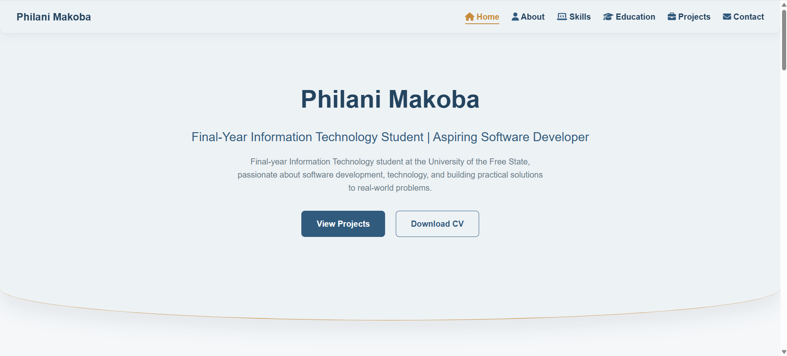

01Personal Portfolio Website
A responsive website presenting my background, technical skills, education and development work, built with a straightforward HTML, CSS and JavaScript stack.
HTMLCSSJavaScript
A collection of academic and personal work that reflects my learning in software development, web technologies and data-driven applications.
Explore a range of application concepts and development work across different technologies.

01A responsive website presenting my background, technical skills, education and development work, built with a straightforward HTML, CSS and JavaScript stack.